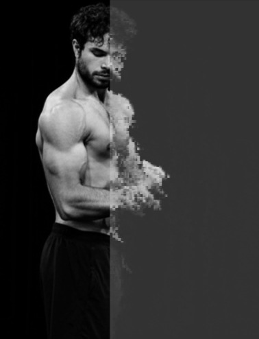

Credo nel costruire prima di parlare
Dove sto andando
Dal freelance operativo alla costruzione di prodotti digitali.
Nel breve periodo voglio lavorare con professionisti, creator e piccoli business che hanno bisogno di una presenza online seria e concreta.
Nel medio-lungo periodo voglio ampliare il raggio: non solo servizi, ma anche MVP e prodotti digitali proprietari. L'obiettivo è costruire una carriera autonoma, solida e scalabile.


La mentalità
Disciplina e continuità: il mio standard di lavoro.
In passato pesavo circa 130 kg. Con disciplina, allenamento e costanza ho portato il mio fisico a 80 kg. Non lo uso come storia motivazionale. Lo considero una prova operativa: se definisco un obiettivo, imposto un metodo e lo seguo.
Nello sviluppo applico la stessa logica: processo chiaro, esecuzione costante e miglioramento progressivo.
I risultati arrivano quando il metodo è più forte dell'improvvisazione
Perche puoi fidarti
Perche lavoro con metodo, trasparenza e continuita.
Se hai un'idea e vuoi trasformarla in un progetto web ordinato e credibile, parliamone. Ti rispondo con una proposta chiara, senza giri di parole.
Vai al form di contatto